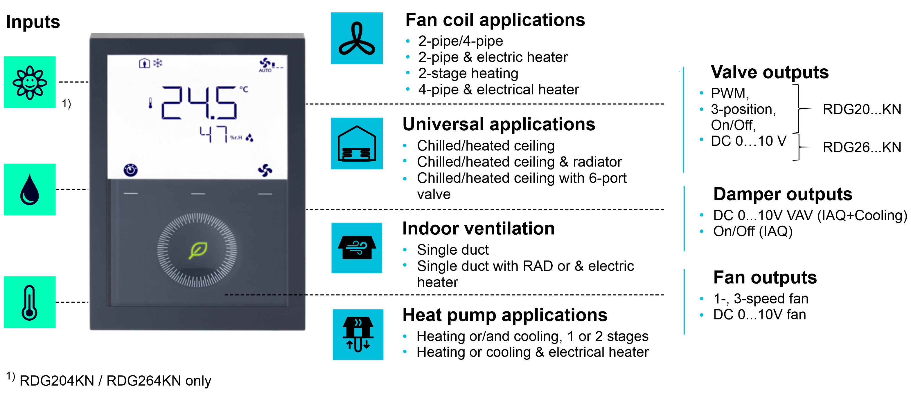
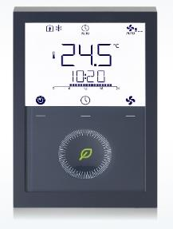

RDG200KN thermostat range on KNX PL-Link
Applications and devices

要查找有关 RDG2xx 房间恒温器应用的更多信息，请参阅有关房间恒温器的基本文档：A6V11545892
RDG2xx 房间恒温器设备需要以下最低固件版本，可以通过 KNX PL-Link 将它们集成到 PXC4/5/7 自动化站中：
RDG200KN / RDG260KN | V5.6 / 指数 D 及更高版本 |
RDG204KN / RDG264KN | V7.4 / 指数 B 及更高版本 |
Typical configuration and integration use cases
Commercial Building:
- Grouping of multiple RDG2xx room thermostat devices which are in the same room zone (manager/subordinate)
- Grouping of multiple RDG2xx room thermostat devices which are placed in the same room zone. By this, setpoints and application modes are automatically shared from the manager to the subordinates.
- Integration of room temperature, humidity, air quality, window status, presence, dew point sensor, supply air temperature sensor information
- Scheduler on PXC4/5/7 automation stations sending resulting HVAC Mode to RDG2xx room thermostat devices
- Distribution of HVAC Controller Mode, Changeover Mode, Outside Temperature and Clock Synchronization by PXC4/5/7 automation stations
- Automatic room temperature setpoint H/C shift by system controller for summer / winter compensation
- Green leaf functionality (reset to optimized setpoints by PXC4/5/7 automation stations)
- Automated energy demand collection and aggregation into PXC4/5/7 automation stations based on heating and cooling distribution segments.
Managed Residential Building:
|  |
Configuration examples for BACnet object generation
通过将 RDG2xxKN 设备添加到控制单元，会自动生成 BACnet 对象。为了了解在整个系统限制计算中需要考虑多少个 BACnet 对象，下面的列表显示了四种典型配置。请记住，KNX PL-链接数据点不算作积分点。有关更多详细信息，请参阅本文档“PXC4、PXC5 和 PXC7 自动化站”中的系统限制。
设备类型 | 应用配置 | BACnet objects1) | 数据点2) |
|---|---|---|---|
|
RDG200KN |
| 26 | 3 |
| 28 | 2 | |
| 29 | 3 | |
RDG204KN |
| 28 | 3 |
RDG260KN |
| 28 | 3 |
RDG264KN |
| 32 | 4 |
| 35 | 5 |
|
1)当 RDG2xx 房间恒温器设备添加为从属设备时，不会创建 BACnet 对象。 2)Desigo CC 许可证要考虑的数据点。 |